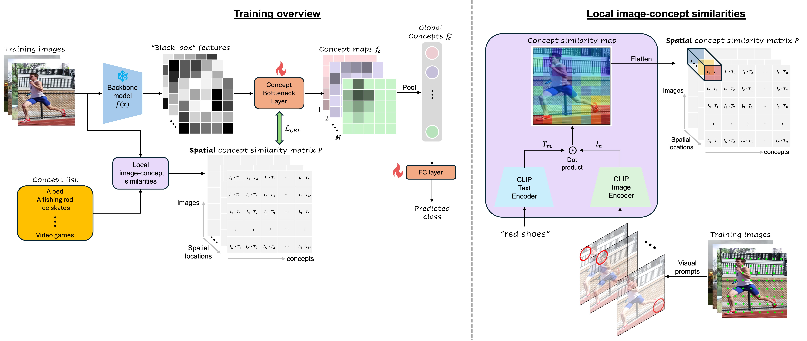
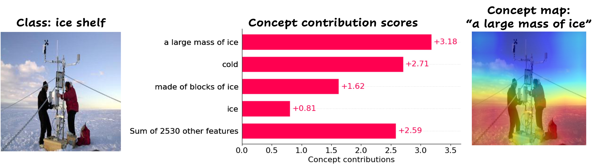
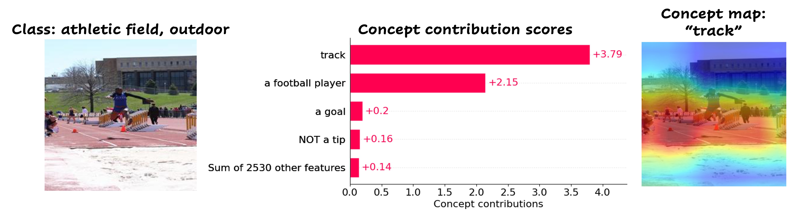
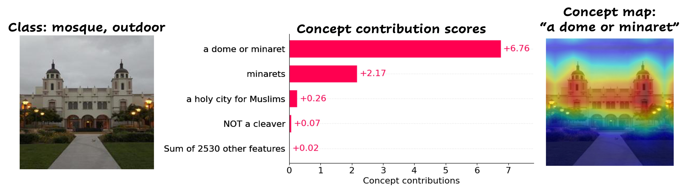
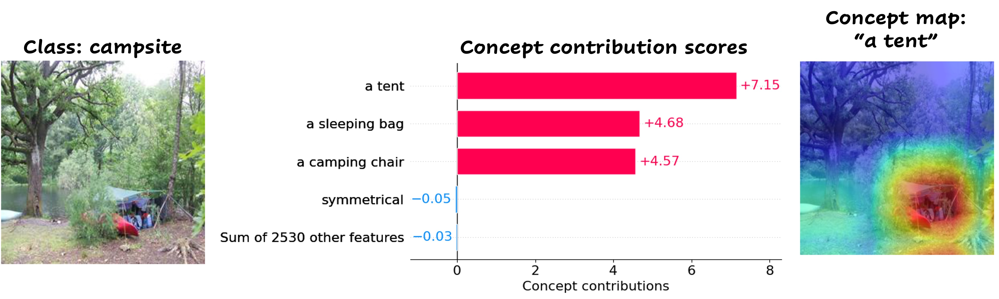
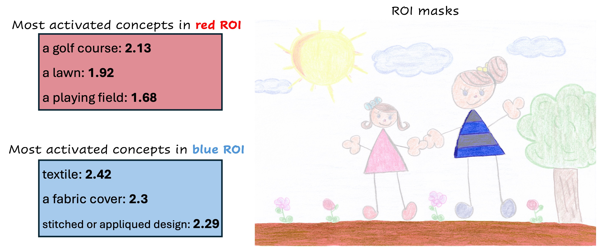
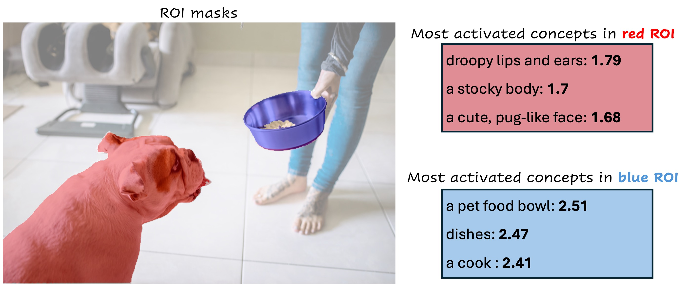
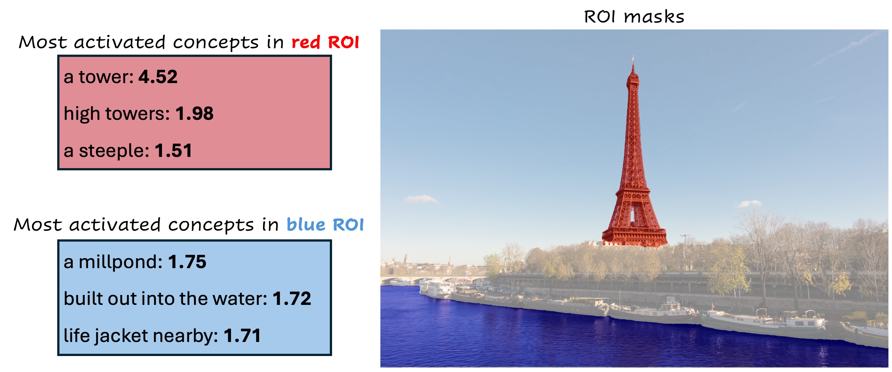
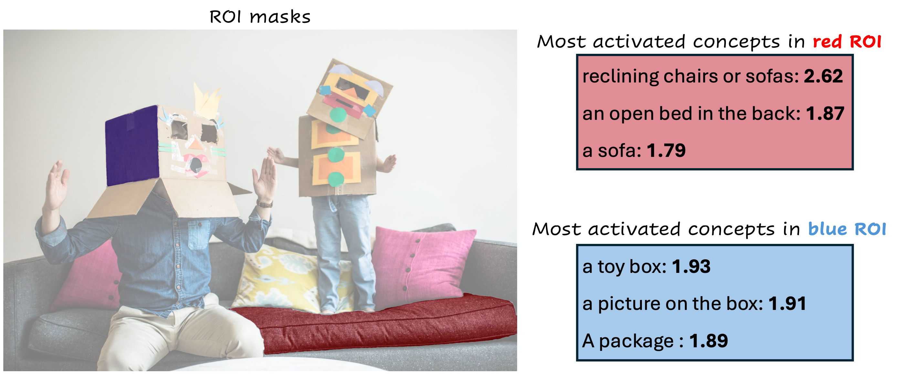

Modern deep neural networks have now reached human-level performance across a variety of tasks. However, unlike humans they lack the ability to explain their decisions by showing where and telling what concepts guided them. In this work, we present a unified framework for transforming any vision neural network into a spatially and conceptually interpretable model. We introduce a spatially-aware concept bottleneck layer that projects “black-box” features of pre-trained backbone models into interpretable concept maps, without requiring human labels. By training a classification layer over this bottleneck, we obtain a self-explaining model that articulates which concepts most influenced its prediction, along with heatmaps that ground them in the input image. Accordingly, we name this method “Spatially-Aware and Label-Free Concept Bottleneck Model” (SALF-CBM). Our results show that the proposed SALF-CBM: (1) Outperforms non-spatial CBM methods, as well as the original backbone, on a variety of classification tasks; (2) Produces high-quality spatial explanations, outperforming widely used heatmap-based methods on a zero-shot segmentation task; (3) Facilitates model exploration and debugging, enabling users to query specific image regions and refine the model's decisions by locally editing its concept maps.

Given a pre-trained backbone model, we transform it into an explainable SALF-CBM as folllows: (1) We automatically generate a list of task-relevant visual concepts using GPT. (2) We compute a spatial concept similarity matrix that quantifies what concepts appear at different locations in each training image, using CLIP's visual prompting property. (3) Using this patial concept similarity matrix, we train a spatially-aware Concept Bottleneck Layer (CBL) that projects the backbone’s “black-box” features into interpretable concept maps. We calculate the learned pseudo-token w*N as a linear combination of the tokens in the vocabulary weighted by their learned coefficients. (4) We pool the concept maps into global concept activations, and train a sparse linear layer over then such that the model’s final prediction is a linear combination of interpretable concepts. (5) In inference time, individual model predictions are explained by the concepts with the highest importance score and their corresponding concept maps.




Given an image and a region within it (as an ROI mask), SALF-CBM can reveal how the model perceives this region by producing a list of the most likely concepts describing it.




If you find this project useful for your research, please cite the following:
@article{benou2025show,
title={Show and Tell: Visually Explainable Deep Neural Nets via Spatially-Aware Concept Bottleneck Models},
author={Benou, Itay and Riklin-Raviv, Tammy},
journal={arXiv preprint arXiv:2502.20134},
year={2025}
}